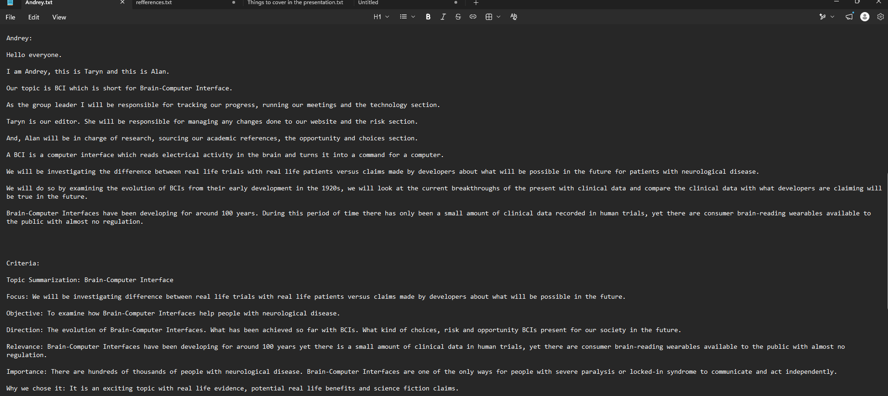
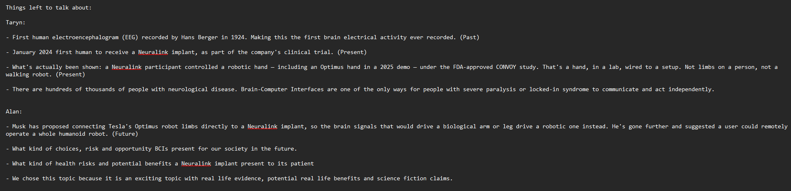
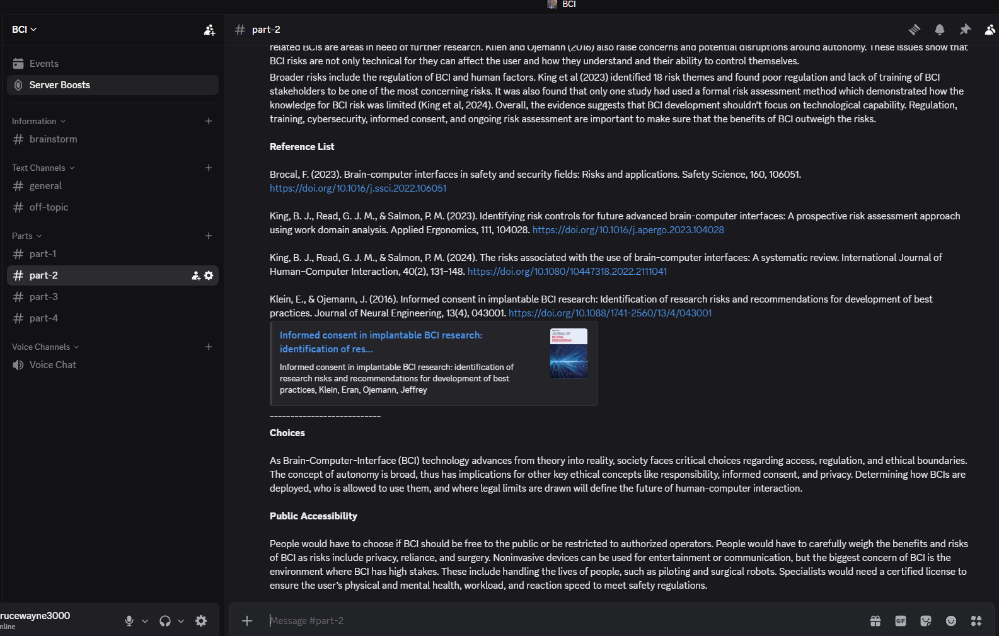
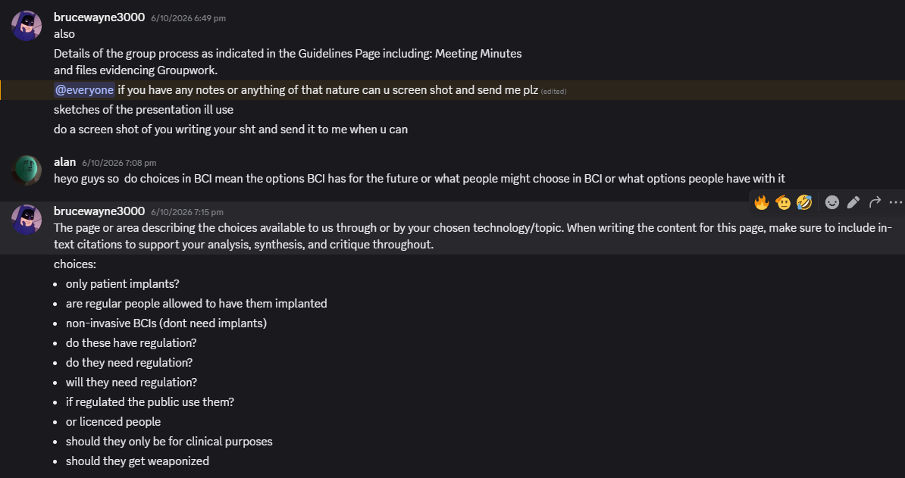
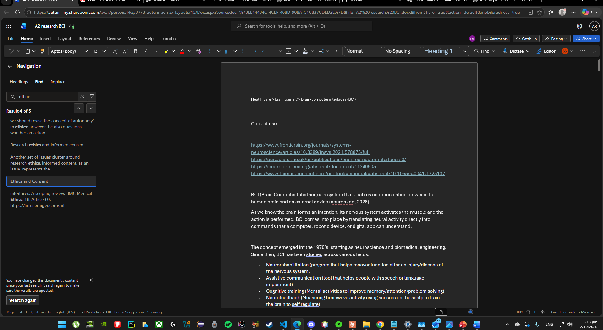
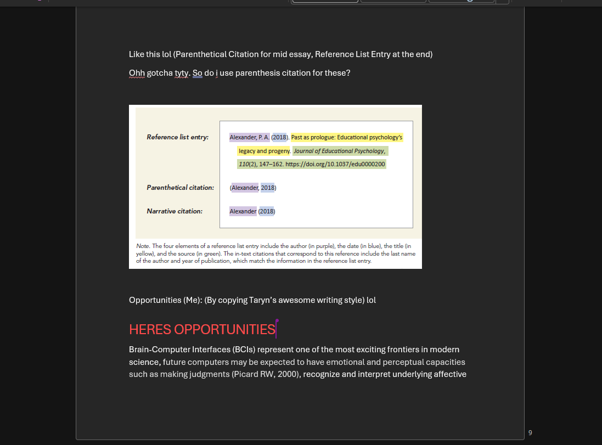
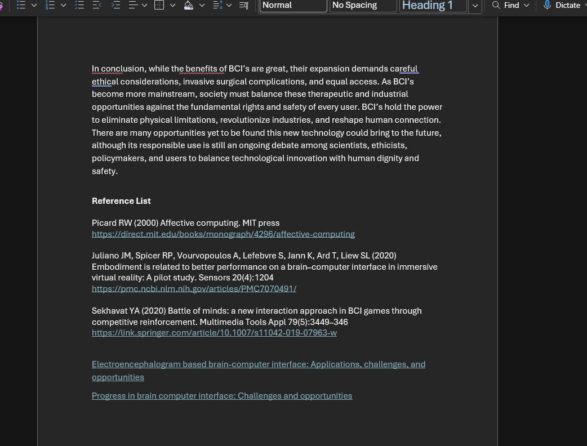

Meetings
9 Sep 2026 Meeting 1 — Introductions and roles
Decisions
- Andrey voted team leader.
- Topics considered: AI in learning, robot caretakers in healthcare, political bots.
- Taryn favoured political bots, Andrey favoured healthcare. No final decision.
Actions
- Andrey — research robots in healthcare.
- Taryn — research political bots.
16 Sep 2026 Meeting 2 — Choosing the topic
Decisions
- Robots in healthcare chosen over political bots as more important to society.
- The brief's "Artificial body parts and bionic people" led us to brain-computer interfaces.
- Topic confirmed: Brain-Computer Interfaces.
Actions
- Andrey — research the past of BCIs.
- Taryn — research the present of BCIs.
- Alan — research the future of BCIs.
23 Sep 2026 Meeting 3 — Presentation review
Decisions
- Feedback from the lecturer: slide font too small. Andrey to edit and resubmit.
- Section split confirmed as presented.
Actions
- Andrey — Technology section.
- Taryn — Risks section.
- Alan — Opportunities and Choices sections.
30 Sep 2026 Meeting 4 — Draft review
Decisions
- Reviewed each other's source material.
- Andrey and Taryn presented the first website design.
Actions
- Andrey — finalise the Technology section.
- Taryn — finalise the Risks section, work on web design.
- Alan — finalise the Opportunities and Choices sections.
7 Oct 2026 Meeting 5 — Progress and referencing
Decisions
- Drafts improving; word count still an issue.
- One more week to finalise writing and APA references.
- Academic sources for future-focused claims are hard to find.
Actions
- Andrey — Technology section, APA referencing.
- Taryn — Risks section and web design.
- Alan — Opportunities and Choices sections.
14 Oct 2026 Meeting 6 — Final review and submission
Decisions
- Website design and written material reviewed and agreed by all members.
- Project ready for submission.
Submission
- Andrey submits the assignment to Canvas on behalf of the group.
- Andrey posts a screenshot of the submitted file in the group Discord chat to confirm.
Original minutes
Other evidence of groupwork
Screenshots of our notes, drafts and group discussion. Click an image to open it full size.






